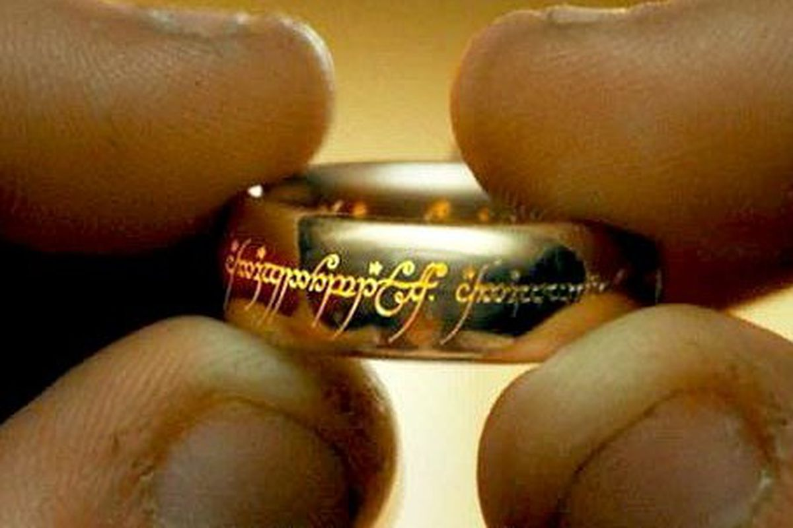

Liefhooge Samuel

Personal information section:
Prognose
| student |
Excel |
Problem solving |
Computer Networking |
| Samuel |
14/20 |
15/20 |
17/20 |
| Davy |
13/20 |
17/20 |
16/20 |
| Leanart |
17/20 |
18/20 |
14/20 |
| jeremy |
17/20 |
12/20 |
15/20 |
Vrienden
| Voornaam |
Naam |
Adres |
Postcode |
Plaats |
Geslacht |
| Matheo |
Dieryck |
Matheostraat 4 |
8935 |
wijtschate |
M |
| Killian |
Nuytten |
Killiestraat 5 |
9000 |
gent |
X |
| Julie |
Ornelis |
Julielaan 69 |
8000 |
brugge |
V |
| Leander |
De Weerdt |
kortrijkstraat 1 |
8500 |
kortrijk |
Onbekend |
| Steven |
Moerman |
klaverstraat 4 |
8500 |
kortrijk |
It'er |
Likes
Music:
I like different a lot of different music, but for the moment, I listen to Combichrist a lot. 
Movies:
Hands down the best movies are the Lord of The Rings trilogy.
I like the movies so much, I even have a reference to them tattooed on my left arm.

Hobbies
Airsoft:
Tactical teamsport where you compete with replica's of real life firearms.
Plastic 6mm balls are used instead of live ammo.
More info:VIP Airsoft.
Dungeons and Dragons:
One of the oldest TTRPG(Table Top Roleplaying Game) to still grow.
A co-operative game, where one player is called the dungeonmaster. He controls every NPC(Non Player Character), enemy, and the world.
The other players band together to rid the evil from their lands(usually).
More info: D&D Wikipedia page.
Survival
I love to go hiking, end up in a forest and set up a "base camp".
Stay there for a day or two before going home. I strive to be completely self-sufficient.
I don't hunt animals though, but I filter and boil my own water to cook and drink.
More info: Survival Wikipedia page.